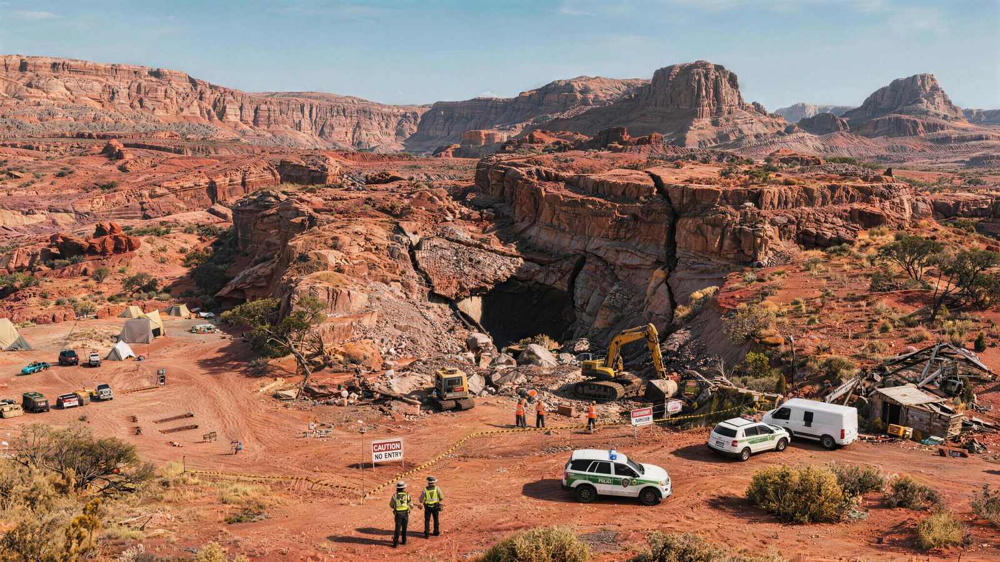

7月中旬，南非北开普省卡拉哈迪边缘地区一处能源勘探项目发生严重事故，涉事企业为天启科技。
勘探队进入山体内部后，洞内突发不明原因坍塌，破坏力远超常规塌方，造成人员死亡。同时，此次坍塌波及周边地质结构，导致附近多处岩层出现明显位移，具体影响范围仍在评估，坍塌诱因尚无定论。

天启科技已向南非矿产资源与能源部提交正式事故报告，确认存在人员死亡，但未披露伤亡人数与勘探作业细节。
南非矿产资源与能源部仅证实：该项目持有合法勘探许可、手续完备，事故已移交相关部门调查，对于事故细节、调查进展及是否存在违规操作等问题均未作进一步回应。
截至发稿，天启科技总部未发布任何公开声明，亦未回应本报采访请求。
据悉，这并非天启科技勘探活动中首次出现人员伤亡，该公司过往勘探行动中也曾发生安全事故，但均未对外公布详细信息。
目前，事故调查仍在进行中，本站将持续关注事件进展。